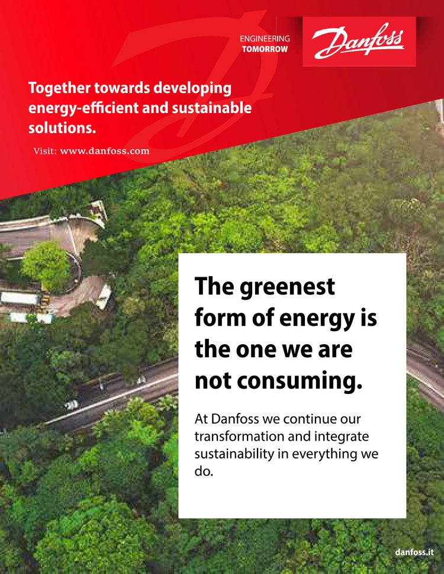
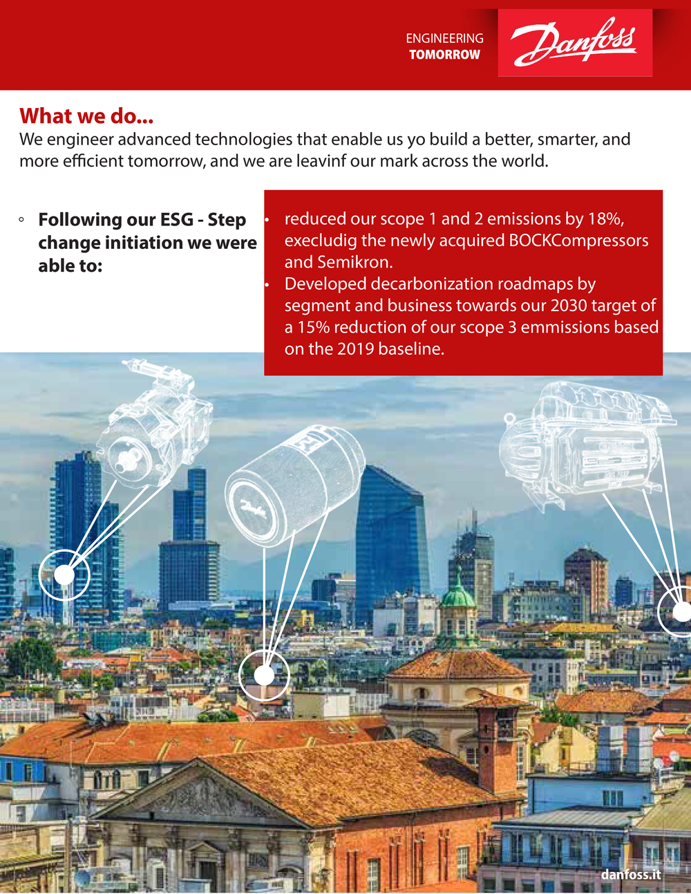

Ogni opportunità è… beh, un’opportunità, anche se a volte per qualcos’altro!
Circa un anno fa mi sono candidata per una posizione come Junior Marketer in Danfoss. Sono stata selezionata per un colloquio e, prima dell'incontro, ho deciso di preparare un mock-up di una brochure con Adobe InDesign e Photoshop. Anche se non mi era stato chiesto di mostrare prove pratiche, l'ho fatto per dimostrare le mie competenze sul campo: insomma, un bel "assumetemi!".
Alla fine la scelta è caduta su un altro candidato, ma il bello dei materiali che realizzi è che non vanno mai sprecati. Non saranno serviti per quel ruolo, ma possono diventare la chiave per conquistarne un altro — ed è esattamente quello che sto facendo qui!
Questo è il mockup della brochure che ho ideato e realizzato per Danfoss come preparazione al colloquio.



